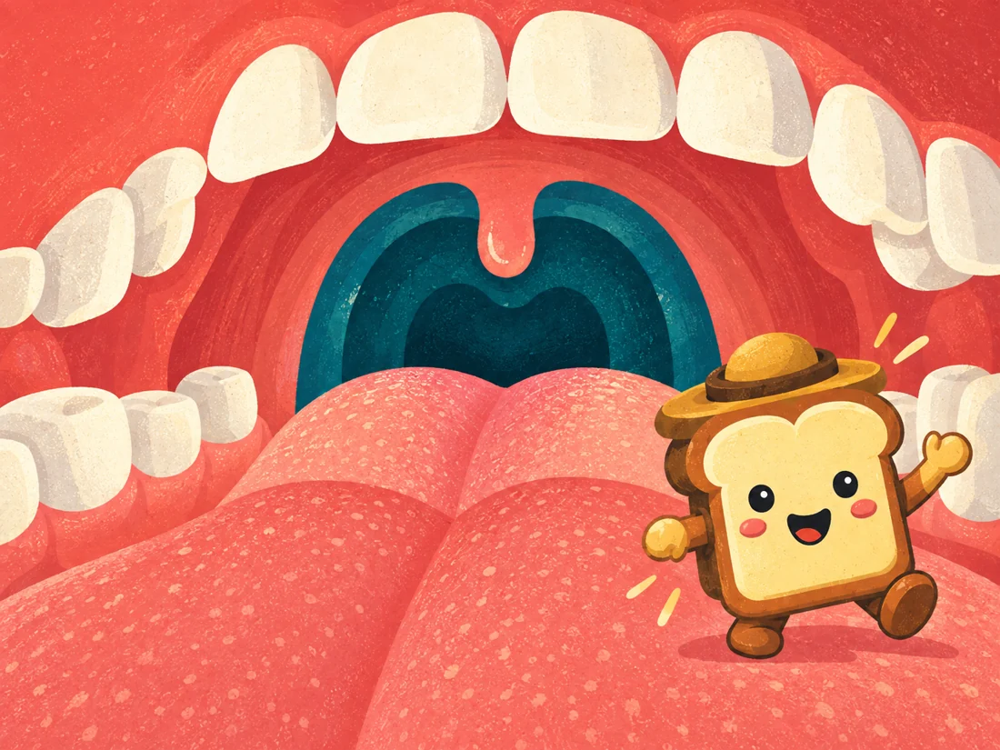
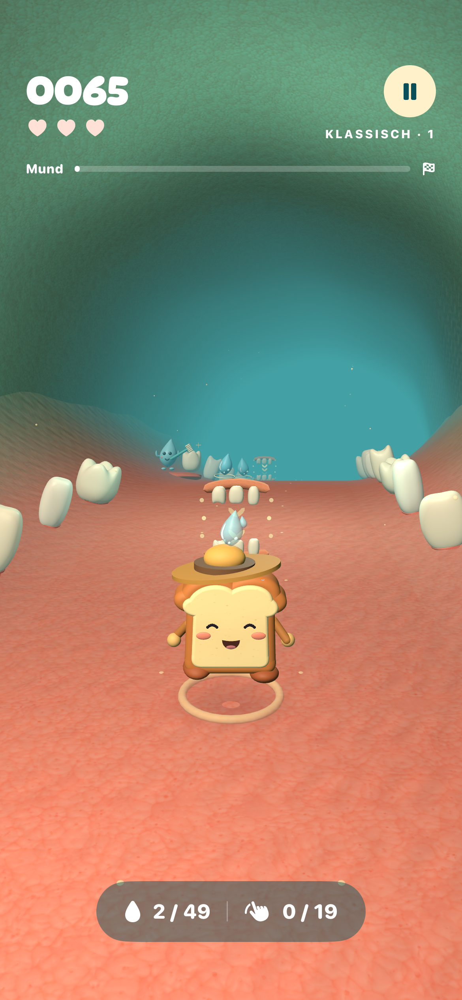
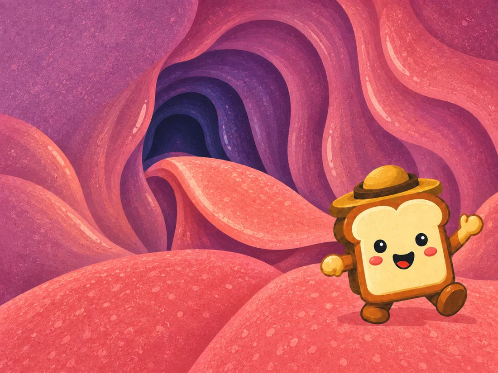
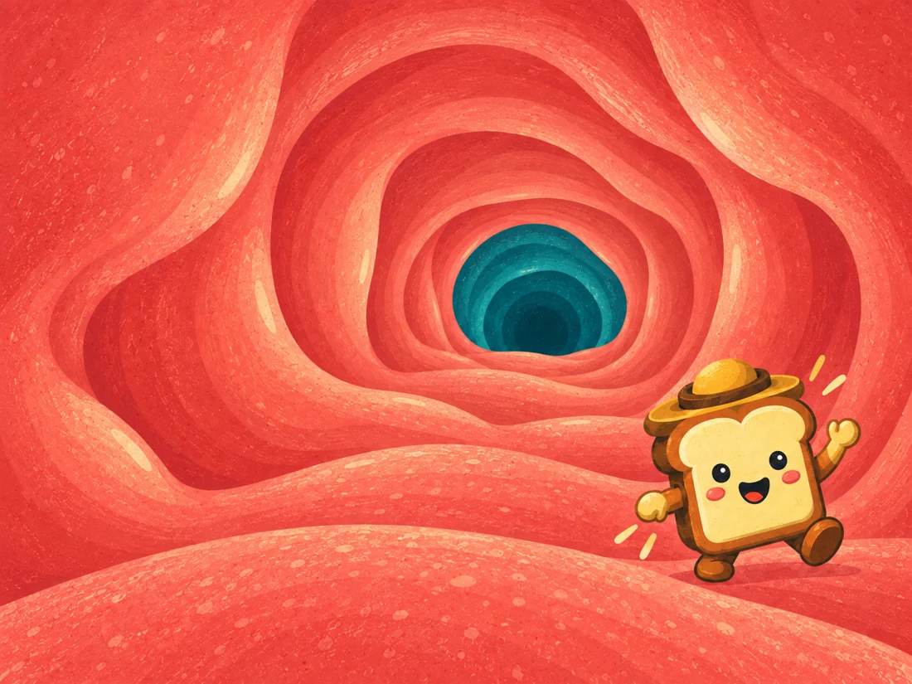
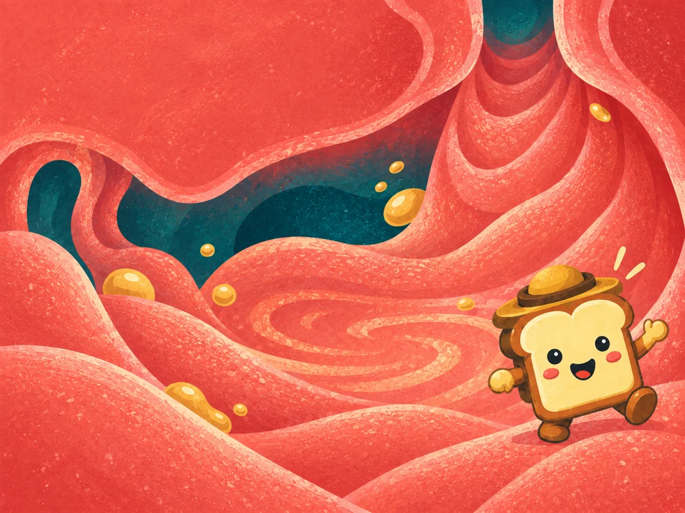
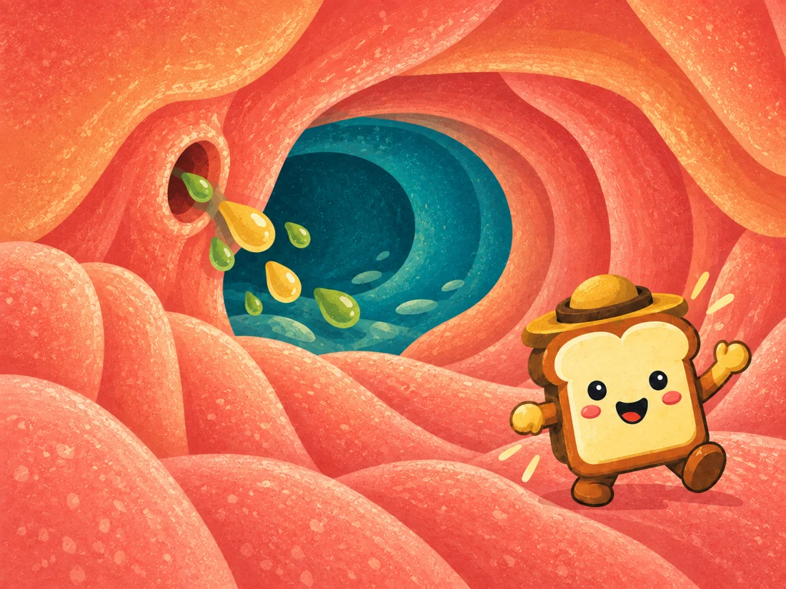
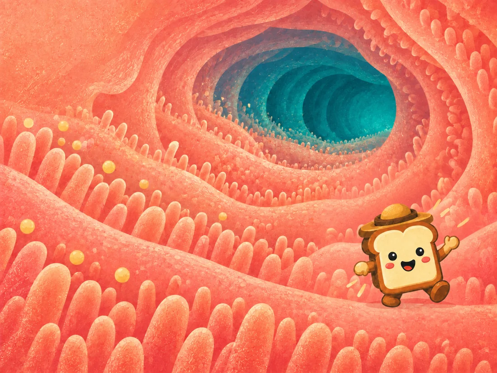
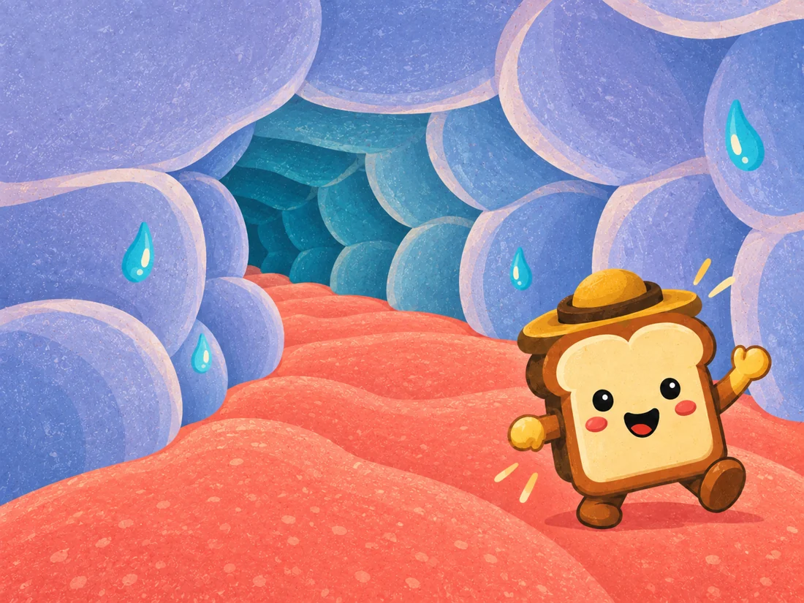
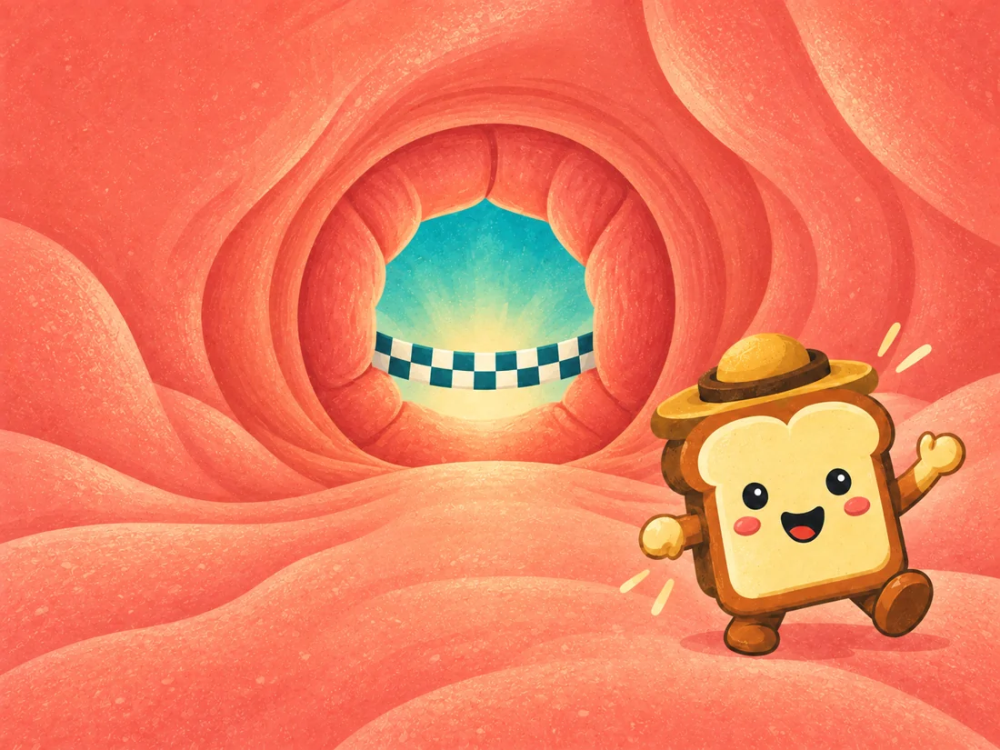

Kleiner Bissen.
Großes Abenteuer.
Ein kleiner Toast. Acht wilde Welten.
Eine außergewöhnliche Reise durch deinen Körper.

Für iPhone und iPad · Im App Store erhältlich

Vorschau der deutschen App-Version

Ein köstlich anderes Abenteuer.
Wische, weiche aus und entdecke acht Welten rund um deine Organe. Kurze Läufe, vier Schwierigkeitsgrade und immer noch ein Versuch.
- 8
- Welten entdecken
- 2–3
- Minuten pro Lauf
- 4
- Schwierigkeitsgrade
Dein nächster Halt?
Ein erstaunlicher Ort.
Vom ersten Bissen bis zum großen Finale.
01Mund
Das Abenteuer beginnt mit einem Bissen. Sammle Speichel und kaue dich voran.

02Rachen
Hier zählt gutes Timing, wenn du tiefer in die Welt der Verdauung eintauchst.

03Speiseröhre
Reite auf einer Welle aus Muskelbewegungen dem Magen entgegen.

04Magen
Sammle Säure und Enzyme. Mische deinen kleinen Reisenden gründlich durch.

05Zwölffingerdarm
Galle und Enzyme kommen dazu. Bringe die richtigen Zutaten zusammen.

06Dünndarm
Entdecke wertvolle Nährstoffe und nimm sie zwischen den winzigen Darmzotten auf.

07Dickdarm
Jeder Tropfen zählt: Gewinne auf der kurvenreichen Strecke Wasser zurück.

08Der große Ausgang
Ein letzter Sprint ins Ziel. Was für eine Reise für einen kleinen Bissen.
Klassisch, Rasant, Raserei oder Inferno. Finde dein Tempo und wachse über dich hinaus.